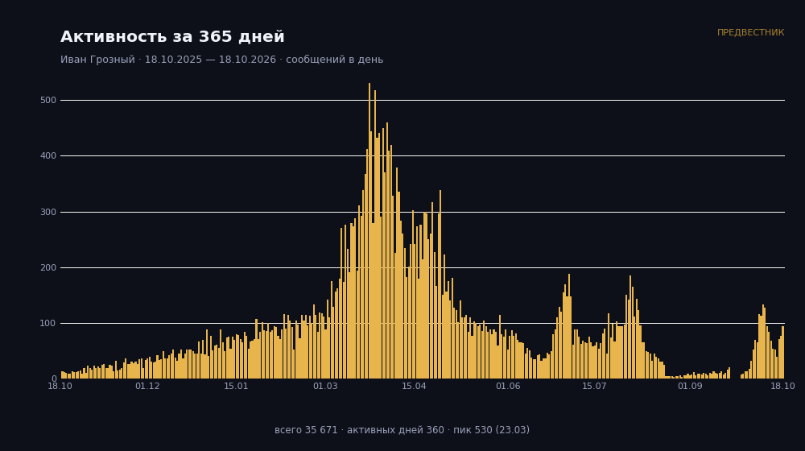
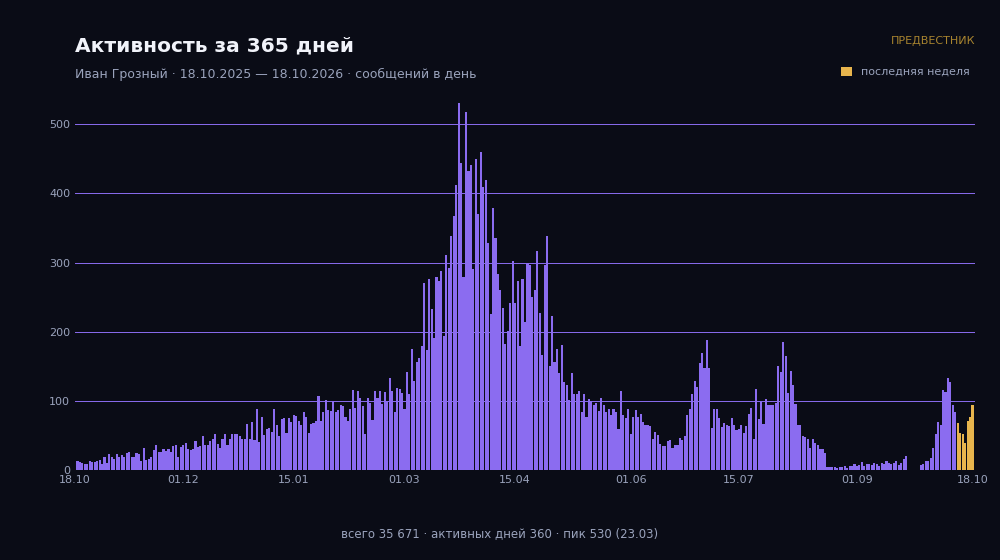
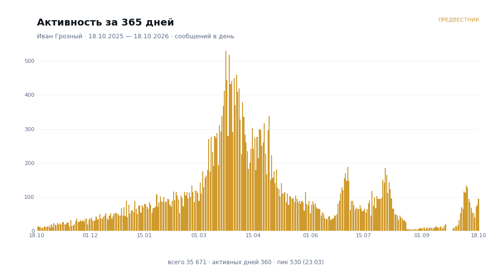

как в твоём примере: столбики за 365 дней с осями и подписями · в тёмной теме Предвестника · рендер ~0,35–0,5 с, из кэша — мгновенно · фото встаёт первым, карточка сразу под ним
Каждый день года — столбик с высотой «сколько сообщений». Слева шкала, снизу даты, под графиком строка статистики: всего · активных дней · пик с датой. История читается с одного взгляда: тихий старт → весенний взрыв → летние всплески → отпуск в сентябре → возвращение в октябре.
«Deep Space Gold» из Mini App и админки: глубокая ночь, тёплое золото, тихая сетка. Заголовок золотом, деликатный вордмарк «ПРЕДВЕСТНИК» в углу — выглядит фирменно, а не «графиком из интернета».
Библиотека рендера уже есть в продовых зависимостях. Библиотека греется один раз при старте бота; сам график рисуется в фоне, пока считаются данные карточки, и кэшируется на день. Никаких внешних сервисов.
Три варианта стиля одного и того же графика (данные демонстрационные). Слева — сам график, справа — как это
выглядит в чате: фото первым сообщением, карточка сразу под ним. Все числа на графике — из daily_user_stats.

Сегодня: 23 · неделя: 187
Месяц: 654 · всего: 12 348
Во всех чатах: 98 123
🪙 Мора: 154 300
💎 Алмазы: 42

Сегодня: 23 · неделя: 187
Месяц: 654 · всего: 12 348
Во всех чатах: 98 123

Сегодня: 23 · неделя: 187
Месяц: 654 · всего: 12 348
Данные: daily_user_stats — та же таблица, что кормит «бот стрик» и счётчики карточки. В группе график
строится по этому чату, в личке — по всем чатам. Порядок в чате: сначала фото с графиком, затем текстовая карточка
(надёжно при любой длине карточки). Технически: рендер — стандартная библиотека из зависимостей проекта, никаких внешних сервисов.